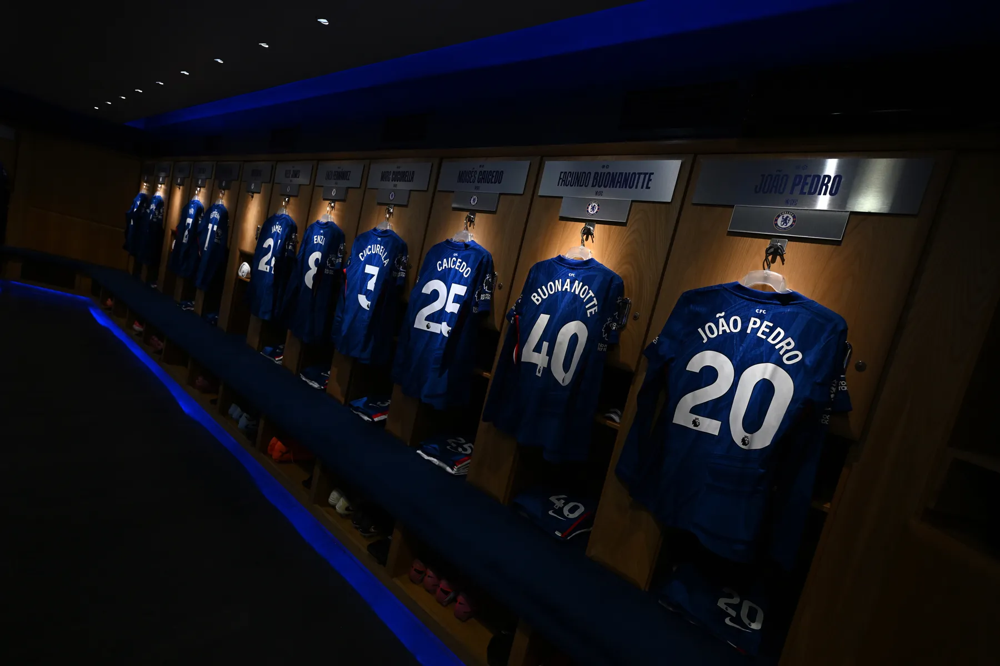

Learning JavaScript Felt Like Walking Onto a Soccer Field
At first, I didn't even know where the field was...
Chapter 1
Kickoff
That's what opening a JavaScript file feels like the first time. The browser is the stadium — massive, alive, reacting to everything. You're the player who just walked in from the stands.
I had no idea what JavaScript was or why it mattered. The page just sat there — I was watching from the stands, not playing.
The browser is a living environment. JavaScript is how you participate in it — not just watch it.
Chapter 2
First Touch
The moment I typed console.log("hello") and saw it appear in DevTools, something shifted. The browser talked back. That first touch — that feedback loop — changed everything.
Everything changed when the browser responded. Before, I kept trying to figure it out by staring at it. I could ask questions and get answers.
console.log · DevTools — Your first line of communication with the machine. It listens. Use it constantly.
Chapter 3
Jersey Numbers
Variables are how you name things in JavaScript. let, const, var — each one tags a value so you can find it again. Without names, the pitch is chaos.
I finally understood why naming things matters. You're not just storing a value — you're making it findable. Unnamed things get lost on the pitch.
Variables: let · const · var — Give your data a jersey. Name it. Find it. Pass it.

Chapter 4
Reading the Play
Conditionals are your tactical brain. if this is true, do that. else, do something different. The page stops being static — it reads the situation and makes decisions.
This is when the page stopped feeling rigid. It could make decisions. Something could be true or false and the whole game could change depending on it.
Conditionals · classList — Logic is tactics. Your code reads the game and responds in real time.
Chapter 5
Final Whistle
I started this not knowing how to make a page do anything. Now I understand that code is a system — every piece connects. But there's still so much more pitch to cover.
JavaScript isn't a wall you climb over once. It's a game you keep playing, getting sharper with every match. The fundamentals travel with you — the pitch just gets bigger.
Scoreboard flashes in, stadium lights dim slowly. The game is over — but the season is just starting.